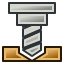

CAM Workbench

Einleitung
Der Arbeitsbereich  CAM wird verwendet, um Maschinenanweisungen für CNC-Maschinen aus einem FreeCAD-3D-Modell zu erstellen. Diese erzeugen reale 3D-Objekte auf CNC-Maschinen wie Fräsmaschinen, Drehbänken, Laserschneidern oder ähnlichen. Typischerweise handelt es sich bei den Anweisungen um einen G-Code-Dialekt. Hier ein allgemeines Beispiel: Simulation einer Abfolge von Werkzeugwegen einer CNC-Drehbank.
CAM wird verwendet, um Maschinenanweisungen für CNC-Maschinen aus einem FreeCAD-3D-Modell zu erstellen. Diese erzeugen reale 3D-Objekte auf CNC-Maschinen wie Fräsmaschinen, Drehbänken, Laserschneidern oder ähnlichen. Typischerweise handelt es sich bei den Anweisungen um einen G-Code-Dialekt. Hier ein allgemeines Beispiel: Simulation einer Abfolge von Werkzeugwegen einer CNC-Drehbank.

Der FreeCAD-Arbeitsbereich CAM erstellt diese Maschinenanweisungen mit folgendem Arbeitsablauf:
-
Ein 3D-Modell ist das Basisobjekt, das üblicherweise mit einem oder mehreren der Arbeitsbereiche PartDesign,
 Part oder
Part oder  Draft erstellt wird.
Draft erstellt wird. -
Ein CAM-Auftrag wird im Arbeitsbereich CAM erstellt. Dieser enthält alle erforderlichen Informationen, die zur Erstellung des benötigten G-Codes für die Bearbeitung des Arbeitsauftrags auf einer CNC-Fräse erforderlich sind: Er listet Halbzeuge (Rohmaterial), einen bestimmten Satz Werkzeuge für die Fräse auf und er folgt bestimmten Amweisungen, die Geschwindigkeit und Bewegungen steuern (normalerweise G-Code).
-
CAM-Werkzeuge werden den Anforderungen der Auftrags-Operationen entsprechend ausgewählt.
-
Fräsbahnen werden z. B. mit den Operationen für Profile und Tasche3D erstellt. Diese CAM-Objekte verwenden FreeCADs internen G-code-Dialekt, unabhängig von der CNC-Maschine.
-
Den Auftrag mit einem zur Maschine passenden G-Code exportieren. Dieser Schritt wird Post-Processing (Nachbereitung) genannt. Es stehen mehrere Postprozessoren zur Verfügung.
Allgemeine Konzepte
Der Arbeitsbereich CAM erzeugt G-Code, der die Bewegungsbahnen (Pfade), die zum Fräsen des durch das 3D-Modell repräsentierten Projekts auf der zu verwendenden Fräse benötigt werden, in FreeCADs G-Code-Dialekt der CAM-Auftrags-Bearbeitungen festlegt, der später in den entsprechenden Dialekt für die zu verwendende CNC-Steuerung übersetzt wird, indem der passende Postprozessor ausgewählt wird.
Der G-code wird aus den in einem CAM-Auftrag enthaltenen Anweisungen und Bearbeitungen generiert. Der Arbeitsablauf des Auftrags listet diese in der Reihenfolge ihrer Ausführung auf. Die Liste wird durch Hinzufügen von CAM-Bearbeitungen, Pfadaufbereitungen, Ergänzungsbefehlen und Pfadänderungen aus dem CAM-Menü oder den GUI-Schaltflächen ausgefüllt.
Der Arbeitsbereich CAM enthält einen Werkzeugverwalter (Bibliothek, Werkzeugtabelle), eine G-Code-Überprüfung und Simulationswerkzeuge. Es verknüpft den Postprozessor und erlaubt den Im- und Export von Auftragsvorlagen.
Der Arbeitsbereich CAM besitzt externe Abhängigkeiten einschließlich:
-
FreeCADs 3D-Modell-Einheiten sind unter festgelegt. Die Postprozessor-Konfiguration legt die endgültigen G-code-Einheiten fest.
-
Der Pfad der Makrodatei und die geometrischen Toleranzen werden unter definiert.
-
Die Farben werden unter definiert.
-
Die Parameter der Haltestege werden unter definiert.
-
Dass die Qualität des 3D-Basismodells den Anforderungen des Arbeitsbereichs CAM entspricht, lässt es die Prüfung der Geometrie bestehen.
Einschränkungen
Einige aktuelle Einschränkungen, derer man sich bewusst sein sollte, sind:
-
Die meisten der CAM-Werkzeuge sind keine echten 3D-Werkzeuge, sondern nur 2,5D fähig. Das bedeutet, dass sie eine festgelegte 2D-Form nehmen und diese bis zu einer bestimmten Tiefe herunterschneiden können. Es gibt jedoch zwei Werkzeuge, die echte 3D-Pfade erzeugen:
 3D-Tasche und 3D-Oberfläche.
3D-Tasche und 3D-Oberfläche. -
Der größte Teil des Arbeitsbereichs CAM ist für eine einfache, standardmäßige 3-Achsen- (XYZ) CNC-Fräse ausgelegt, aber Dreh-(maschinen-)werkzeuge werden unterstützt durch das Drehen-AddOn.
-
Die meisten Bearbeitungen im Arbeitsbereich CAM geben nur Pfade zurück, die auf einem Standard-Schaftfräser-Werkzeug bzw. -Bit basieren, ohne Rücksicht auf einen, in einer bestimmten Werkzeugsteuerung zugewiesenen, Werkzeug- bzw. Bit-Typ.
introduced in 26.3: Die  Gravieren, 3D-Oberfläche, und andere Bearbeitungen unterstützen nun das Vorhandensein für die Form von Werkzeugen.
Gravieren, 3D-Oberfläche, und andere Bearbeitungen unterstützen nun das Vorhandensein für die Form von Werkzeugen.
-
Die Operationen innerhalb des Arbeitsbereichs CAM kennen keine Spannvorrichtungen, die zur Befestigung des Modells an einer Maschine verwendet werden. Überprüfe und simuliere daher die erzeugten Bahnen, bevor der Code an deine Maschine gesendet wird. Wenn nötig, eine Spannvorrichtungen in FreeCAD modellieren, um die erzeugten Bahnen besser überprüfen zu können. Auf mögliche Kollisionen mit Spannern oder anderen Hindernissen entlang der Bahnen achten.
Einheiten
Der Umgang mit Einheiten im Arbeitsbereich CAM kann verwirrend sein. Es gibt mehrere Punkte, die verstanden werden müssen:
-
FreeCADs Basiseinheiten für Länge und Zeit sind 'mm' und 's' bzw. Geschwindigkeit ist 'mm/s'. Diese Einheiten speichert FreeCAD intern, unabhängig von allem anderem.
-
Das standardmäßige Einheitensystem nutzt diese Basiseinheiten. Wird das Standard-Einheitensystem benutzt und eine Vorschubgeschwindigkeit ohne Einheit eingegeben, wird sie als 'mm/s' interpretiert.
-
Die meisten CNC-Maschinen erwarten aber Vorschubgeschwindigkeiten in 'mm/min' oder 'Zoll/min'. Die meisten Postprozessoren konvertieren die Einheiten automatisch, wenn sie den Maschinencode generieren.
Schemata:
-
Schemaänderungen in den Einstellungen ändert die Standardeinheitszeichenkette für die Eingabefelder. Wenn ein CAM-Anwender es vorzieht, metrisch zu konstruieren, wird dringend empfohlen, das Schema "Metrische Kleinteile & CNC" zu verwenden. Wird in US-Einheiten konstruiert, funktionieren entweder Britisches Dezimal und US-Bauwesen.
-
Ändern des bevorzugten Einheitenschemas hat keine Auswirkung auf die Ausgabe, hilft aber, Eingabefehler zu vermeiden.
Ausgabe:
-
Die Generierung der korrekten Einheiten in der Ausgabe liegt in der Verantwortung des Postprozessors und geschieht nur bei diesem Vorgang.
-
Die Einheiten für die Maschine bei der Ausgabe sind komplett unabhängig von der gewählten Einheitendarstellung.
-
Postprozessoren erzeugen entweder metrische Einheiten (G21), imperiale Einheiten (G20) oder sind konfigurierbar.
-
Konfigurierbare Postprozessoren generieren standardmäßig metrische Einheiten (G21).
-
Soll der konfigurierbare Postprozessor imperialen G-code (G20) ausgegeben, muss das korrekte Argument in der Job-Output-Konfiguration (d.h. --inches for linuxcnc) eingestellt werden. Dies kann in einer Auftragsvorlage gespeichert werden und als Standardvorlage eingestellt werden, um sie für zukünftige Aufträge automatisch zu verwenden.
CAM Untersuchen:
-
Wird das Werkzeug CAM Untersuchen zum Betrachten des G-Codes eingesetzt, wird als Einheit 'mm/s' angezeigt, da der Postprozessor noch nicht angewendet wurde.
Höhen und Tiefen
Viele der Befehle haben unterschiedliche Höhen und Tiefen:

Visuelle Referenz für Tiefeneinstellungen
Befehle
Einige Befehle sind experimentell und standardmäßig nicht verfügbar. Um sie zu aktivieren, siehe CAM experimentell.
Projektbefehle
-
 Auftrag: Erstellt einen neuen CNC-Auftrag.
Auftrag: Erstellt einen neuen CNC-Auftrag. -
 Plausibilitätsprüfung: Überprüft den ausgewählten Auftrag auf fehlende Werte.
Plausibilitätsprüfung: Überprüft den ausgewählten Auftrag auf fehlende Werte. -
 Nachbereitung: Exportiert ein Projekt in G-code.
Nachbereitung: Exportiert ein Projekt in G-code. -
 Post Process Selected: TBD. introduced in 26.3
Post Process Selected: TBD. introduced in 26.3 -
Exportvorlage: Exportiert den aktuellen Auftrag als Vorlage.
Werkzeugbefehle
-
 CAM SimulatorGL: Aktiviert den neuen, verbesserten CAM-Simulator. introduced in 1.0
CAM SimulatorGL: Aktiviert den neuen, verbesserten CAM-Simulator. introduced in 1.0 -
 CAM Simulator: Zeigt die Fräsbearbeitung wie sie auf der Maschine durchgeführt wird.
CAM Simulator: Zeigt die Fräsbearbeitung wie sie auf der Maschine durchgeführt wird. -
 CAM-Befehle untersuchen: Zeigt den G-code zur Überprüfung an.
CAM-Befehle untersuchen: Zeigt den G-code zur Überprüfung an. -
Beenden der Auswahlschleife: Vervollständigt eine Schleife aus zwei ausgewählten Kanten.
-
Bearbeitung umschalten: Aktiviert oder deaktiviert eine Pfadbearbeitung.
-
 Werkzeugbit-Bibliotheksmanager: Öffnet einen Editor um Werkzeugbit-Bibliotheken zu verwalten.
Werkzeugbit-Bibliotheksmanager: Öffnet einen Editor um Werkzeugbit-Bibliotheken zu verwalten. -
 Werkzeugbit hinzufügen …: Öffnet die Werkzeugbit-Auswahl.
Werkzeugbit hinzufügen …: Öffnet die Werkzeugbit-Auswahl.
Grundlegende Bearbeitungen
-
 Profile: Erzeugt eine Profilbearbeitung des gesamten Modells oder von einer oder mehreren ausgewählten Flächen oder Kanten.
Profile: Erzeugt eine Profilbearbeitung des gesamten Modells oder von einer oder mehreren ausgewählten Flächen oder Kanten. -
 Taschenform: Erzeugt eine Taschenbearbeitung aus einer oder mehreren ausgewählten Taschen.
Taschenform: Erzeugt eine Taschenbearbeitung aus einer oder mehreren ausgewählten Taschen. -
 Fräsen: Erzeugt einen Oberflächenpfad.
Fräsen: Erzeugt einen Oberflächenpfad. -
 Helix: Erzeugt eine wendelförmige Bahn.
Helix: Erzeugt eine wendelförmige Bahn. -
 Adaptiv: Erstellt eine adaptive Räum- und Profilierungsbearbeitung.
Adaptiv: Erstellt eine adaptive Räum- und Profilierungsbearbeitung. -
 Nut: Erzeugt eine Nutenbearbeitung aus ausgewählten Formelementen oder benutzerdefinierten Punkten. Experimentell.
Nut: Erzeugt eine Nutenbearbeitung aus ausgewählten Formelementen oder benutzerdefinierten Punkten. Experimentell. -
 Bohren: Führt einen Bohrzyklus durch.
Bohren: Führt einen Bohrzyklus durch. -
 Gewindefräsen: Erzeugt eine CAM-Gewindefräsoperation aus den Eigenschaften des Basisobjekts.
Gewindefräsen: Erzeugt eine CAM-Gewindefräsoperation aus den Eigenschaften des Basisobjekts. -
 Gravieren: Erstellt einen Gravurpfad.
Gravieren: Erstellt einen Gravurpfad. -
 Entgraten: Erstellt eine Bahn zum Entgraten.
Entgraten: Erstellt eine Bahn zum Entgraten. -
 V-Schnitt: Erzeugt einen Gravurpfad unter Verwendung einer V-Werkzeugform.
V-Schnitt: Erzeugt einen Gravurpfad unter Verwendung einer V-Werkzeugform.
3D-Bearbeitungen
-
 3D-Tasche: Erzeugt einen Pfad für eine 3D-Tasche.
3D-Tasche: Erzeugt einen Pfad für eine 3D-Tasche. -
3D Oberfläche: Erstellt einen Pfad für eine 3D-Oberfläche. Experimentell.
-
 Wasserlinie: Erzeugt einen Wasserlinienpfad für eine 3D-Oberfläche. Experimentell.
Wasserlinie: Erzeugt einen Wasserlinienpfad für eine 3D-Oberfläche. Experimentell.
Pfadaufbereitung
-
 Anordnung: TBD. introduced in 1.1
Anordnung: TBD. introduced in 1.1 -
 Achsenzuordnung: Ordnet eine Achse einer anderen neu zu.
Achsenzuordnung: Ordnet eine Achse einer anderen neu zu. -
 Begrenzung: Fügt eine Randaufbereitungsänderung einem ausgewählten Pfad hinzu.
Begrenzung: Fügt eine Randaufbereitungsänderung einem ausgewählten Pfad hinzu. -
 Hundeknochen: Fügt eine Hundeknochen-Aufbereitungsänderung einem ausgewählten Pfad hinzu.
Hundeknochen: Fügt eine Hundeknochen-Aufbereitungsänderung einem ausgewählten Pfad hinzu. -
 Schleppmesser: Fügt eine Schleppmesser-Aufbereitungsänderung einem ausgewählten Pfad hinzu.
Schleppmesser: Fügt eine Schleppmesser-Aufbereitungsänderung einem ausgewählten Pfad hinzu. -
 An/Abfahren: Fügt einen Anfahr- und/oder Abfahrpunkt einem ausgewählten Pfad hinzu.
An/Abfahren: Fügt einen Anfahr- und/oder Abfahrpunkt einem ausgewählten Pfad hinzu. -
 Mirror: TBD. introduced in 26.3
Mirror: TBD. introduced in 26.3 -
 Eingangsrampe: Fügt dem ausgewählten Pfad eine vertikale Anfahrrampe hinzu.
Eingangsrampe: Fügt dem ausgewählten Pfad eine vertikale Anfahrrampe hinzu. -
 Haltesteg: Fügt dem ausgewählten Pfad eine Erweiterung für Haltestege zu.
Haltesteg: Fügt dem ausgewählten Pfad eine Erweiterung für Haltestege zu. -
 Z-Tiefenkorrektur: Korrigiert die Z-Tiefe mithilfe der Messspitzen-Karte.
Z-Tiefenkorrektur: Korrigiert die Z-Tiefe mithilfe der Messspitzen-Karte.
Ergänzende Befehle
-
 Kommentar: Fügt einen Kommentar in den G-Code eines Pfades ein.
Kommentar: Fügt einen Kommentar in den G-Code eines Pfades ein. -
 Halt: Fügt einen Halt der Maschine ein.
Halt: Fügt einen Halt der Maschine ein. -
 Benutzerdefiniert: Fügt benutzerdefinierten G-Code ein.
Benutzerdefiniert: Fügt benutzerdefinierten G-Code ein. -
 Messspitze: Erstellt ein Prüfraster aus einem Auftragsbestand.
Messspitze: Erstellt ein Prüfraster aus einem Auftragsbestand. -
 Aus Form: Erstellt ein Pfadobjekt aus einem gewählten Part Objekt. Experimentell.
Aus Form: Erstellt ein Pfadobjekt aus einem gewählten Part Objekt. Experimentell.
Pfadänderung
-
 Kopieren der Bearbeitung im Auftrag: Erstellt eine parametrische Kopie eines gewählten Pfadobjekts.
Kopieren der Bearbeitung im Auftrag: Erstellt eine parametrische Kopie eines gewählten Pfadobjekts. -
 Anordnung: Erstellt eine Anordnung durch Duplizieren eines ausgewählten Pfades.
Anordnung: Erstellt eine Anordnung durch Duplizieren eines ausgewählten Pfades. -
 Einfache Kopie: Erstellt eine nichtparametrische Kopie eines ausgewählten Pfadobjekts.
Einfache Kopie: Erstellt eine nichtparametrische Kopie eines ausgewählten Pfadobjekts.
Sonstiges
-
 Bereich: Erstellt einen Formelementbereich aus gewählten Objekten. Experimentell.
Bereich: Erstellt einen Formelementbereich aus gewählten Objekten. Experimentell. -
 Bereich Arbeitsebene: Erstellt eine Formelementbereich Arbeitsebene. Experimentell.
Bereich Arbeitsebene: Erstellt eine Formelementbereich Arbeitsebene. Experimentell.
Veraltete Werkzeuge
-
 Vorrichtung: Ändert die Position der Vorrichtung. Nicht verfügbar in 1.1 and later.
Vorrichtung: Ändert die Position der Vorrichtung. Nicht verfügbar in 1.1 and later. -
 Fläche: Erzeugt einen Oberflächenpfad. Steht in 26.3 and later nicht mehr zur Verfügung.
Fläche: Erzeugt einen Oberflächenpfad. Steht in 26.3 and later nicht mehr zur Verfügung. -
 Gewindeschneiden. Steht in 26.3 and later nicht mehr zur Verfügung.
Gewindeschneiden. Steht in 26.3 and later nicht mehr zur Verfügung.
ToolBit Architektur
Verwalte Werkzeuge, Bits und die Werkzeugbibliothek. Basiert auf der ToolBit Architektur.
Andere
-
CAM Häufig gestellte Fragen: Der Arbeitsbereich CAM teilt viele Konzepte mit anderen CAM-Softwarepaketen, hat aber seine eigenen Besonderheiten. Wenn etwas nicht stimmt, ist dies vielleicht ein guter Anfang.
-
CAM Einrichtungsblatt: Es kann ein Einrichtungsblatt verwendet werden zum Anpassen, wie die Werte verschiedener Eigenschaften von Bearbeitungen berechnet werden.
-
CAM Postprozessor-Anpassung: Wenn man eine spezielle Maschine hat, die die Daten der vorhandenen Postprozessoren nicht verwenden kann, muss man eventuell einen eigenen Postprozessor schreiben.
-
CAM VierteAchse: Experimentelles Vier-Achs-Fräsen.
Einstellungen
-

Einstellungen…: Verfügbare Einstellungen für den Arbeitsbereich CAM.
Skripten
Siehe CAM Skripten.
Anleitungen
-
CAM CAM Rundgang für Ungeduldige: Eine kurze Anleitung, um sich mit CAM vertraut zu machen.
Videos
-
FreeCAD Path: Custom paths with Python - Part 1 - 5: Eine Wiedergabeliste mit einer Reihe von fünf Videos auf Englisch von sliptonic. Diese Serie zeigt, wie man mit dem Arbeitsbereich CAM arbeitet.
-
FreeCAD CAM Path Workbench: Eine Wiedergabeliste mit einer Reihe von sieben Videos in englischer Sprache von CAD CAM Lessons.
-
FreeCAD CAM CNC: Eine Wiedergabeliste mit einer Reihe von acht Videos in englischer Sprache von CAD CAM Lessons.
-
Siehe auch den Abschnitt Computergestützte Fertigung (CAM) der Video-Tutorials-Wikiseite.
Fahrplan
-
CAM Development Roadmap: Als Entwickler, der einen Beitrag zur CAM beitragen möchte, liest man das.